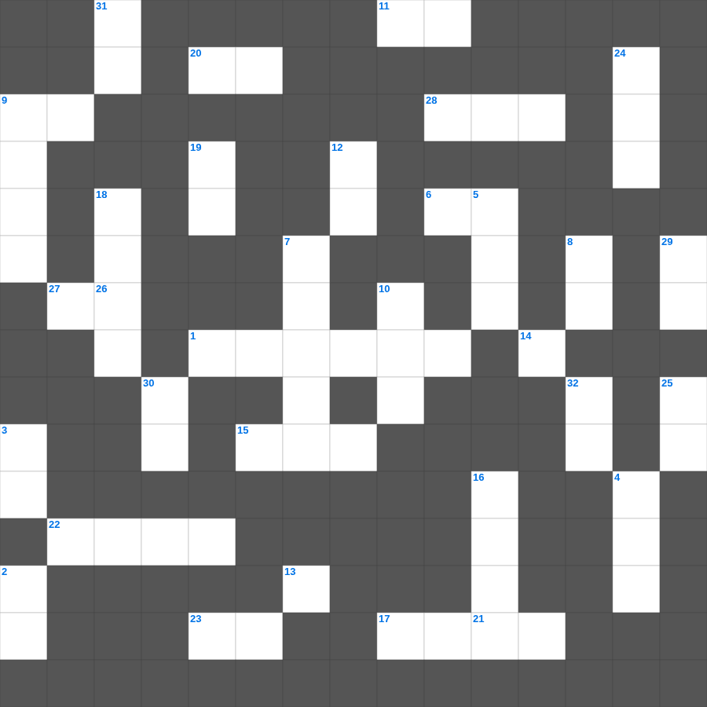

성경 난센스 퀴즈 (2)
📌 서비스 정의
십자가로세로는 교회 주보와 주일학교에서 사용할 수 있는 성경 기반 가로세로 퍼즐 서비스입니다. 성경 인물, 사건, 핵심 구절을 바탕으로 제작되었습니다. 온라인 풀이 및 인쇄 기능을 제공합니다.
성경를 주제로 한 성경 성경공부 자료입니다. 35개의 단어를 맞춰보세요! 가로세로 낱말 퍼즐 형식으로 성경의 핵심 내용을 재미있게 복습할 수 있습니다.

📝 가로 힌트
1. 다윗이 물맷돌로 거인 장수를 이긴 사건
6. 보냄을 받은 자라는 뜻
9. 잃어버린 한 마리 이것을 찾는 목자
9. 성령의 열매: 오래 참음, 자비, 이것
11. 예수님이 부활 후 고기를 구우신 숯불
13. 모세가 반석을 치자 나온 것
15. 사드락, 메삭, 아벳느고의 신앙
17. 너희는 여호와를 만날 만한 때에 이것하라
20. 성령의 검은 곧 하나님의 이것
21. 여호와 이것: 치료하시는 하나님
22. 빌라도가 군중의 요구에 예수님을 넘겨주고 한 행동
23. 예수님이 태어나 뉘이셨던 곳
26. 너희 몸은 너희가 하나님께로부터 받은 바 너희 가운데 계신 성령의 이것인 줄을 알지 못하느냐
27. 너희의 온 영과 혼과 몸이 우리 주 예수 그리스도 강림하실 때에 흠 없게 이것되기를 원하노라
28. 두 번째 재앙: 온 땅에 올라온 동물
📝 세로 힌트
2. 십계명이 새겨진 것
3. 야곱의 아들 수
4. 열두 해를 이것증으로 앓던 여인
5. 이것 하지 말라(남의 물건을 가져감)
7. 열매 없는 이것나무를 예수님이 저주하심
8. 너희가 서로 사랑하면 모든 사람이 너희가 내 이것인 줄 알리라
9. 양의 뿔로 만든 나팔
10. 성경 인물 중 가장 키가 큰 사람은?
12. 예수님이 다시 오시는 일
13. 오직 정의를 이것 같이 흐르게 할지어다
14. 첫 번째 재앙: 강물이 이것이 됨
16. 범사에 이것하라 이는 그리스도 예수 안에서 너희를 향하신 하나님의 뜻이니라
18. 엘리야가 갈멜산에서 불로 응답받은 대결
19. 새 예루살렘 성곽의 첫 번째 기초석
24. 근신하라 이것하라 너희 대적 마귀가 우는 사자 같이 두루 다니며 삼킬 자를 찾나니
25. 야곱이 사다리 환상을 본 곳
29. 지성소와 성소를 가로막고 있던 천
30. 엘리야가 회오리바람을 타고 간 곳
31. 진리가 너희를 이것케 하리라
32. 하나님이 인간을 만드실 때 불어넣으신 것
🧩 이 퍼즐에서 배우는 내용
이 퍼즐은 성경 난센스 퀴즈 (2)의 핵심 단어와 개념을 자연스럽게 복습할 수 있도록 구성되었습니다. 주일학교 수업이나 개인 성경공부에서 학습 내용을 점검하는 용도로 바로 활용할 수 있습니다.
🧑🏫 교회 교육 자료 활용
이 퍼즐은 주일학교 교재 추천 자료로 활용할 수 있고, 주일학교 주보에 넣기 좋은 분량으로 구성되어 있습니다. 수업용 주일학교 교안에 활동지로 붙이거나, 예배 후 복습용 주일학교 공과교재로 바로 사용할 수 있습니다.
🏷️ 키워드
성경 성경공부 자료, 성경, 십자가로세로, 성경퀴즈, 말씀퀴즈, 가로세로퍼즐, 주일학교 교재 추천, 주일학교 주보, 주일학교 교안, 주일학교 공과교재